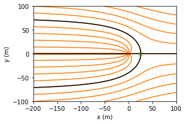

Steady two-dimensional flow to wells in uniform background flow
Contents

The Python code provided below is from
Analytical Groundwater Modeling: Theory and Applications Using Python
by Mark Bakker and Vincent Post
ISBN 9781138029392
The book is published by CRC press and is available here.
This Notebook is provided under the MIT license.
© 2022 Mark Bakker and Vincent Post
Steady two-dimensional flow to wells in uniform background flow#
%matplotlib inline
import numpy as np
import matplotlib.pyplot as plt
plt.rcParams["figure.figsize"] = (8, 3) # set default figure size
plt.rcParams["contour.negative_linestyle"] = 'solid' # set default line style
plt.rcParams["figure.autolayout"] = True # same at tight_layout after every plot
A single well in uniform background flow#
# parameters
xw = 0 # x-location of well, m
yw = 0 # y-location of well, m
Q = 80 # discharge of well, m^3/d
U = 0.5 # uniform flow in x-direction, m^2/d
# solution
xs = xw + Q / (2 * np.pi * U)
xg, yg = np.meshgrid(np.linspace(-200, 100, 100), np.linspace(-100, 100, 100))
psi = Q / (2 * np.pi) * np.arctan2(yg, xg) - U * yg
# basic streamline plot, left graph
plt.subplot(111, aspect=1)
plt.contour(xg, yg, psi, 10, colors='C1', linestyles='-')
plt.contour(xg, yg, psi, [-U * yw], colors='k', linestyles='-') # envelope
plt.plot(xs, 0, 'C2x'); # stagnation point
plt.xlabel('x (m)')
plt.ylabel('y (m)');

# additional parameters
n = 0.3 # porosity, -
H = 20 # aquifer thickenss, m
rw = 0.3 # radius of well, m
tmax = 10 * 365 # total travel time, d
t = np.arange(0, 10 * 365 + 1, 365 / 20) # times pathline is returned, d
# functions
def vxvy(t, xy, xw=0, yw=0):
x, y = xy
rsq = (x - xw)**2 + (y - yw)**2
Qx = U - Q / (2 * np.pi) * (x - xw) / rsq
Qy = -Q / (2 * np.pi) * (y - yw) / rsq
return np.array([Qx, Qy]) / (n * H)
def reached_well(t, xy):
return np.sqrt((xy[0] - xw) ** 2 + (xy[1] - yw) ** 2) - rw
reached_well.terminal = True # specify the terminal attribute
# pathline solution
from scipy.integrate import solve_ivp
path0 = solve_ivp(vxvy, (0, tmax), y0=[-200, 50], t_eval=t, events=reached_well)
print('path0 message:', path0.message)
print(f'path0 reached well after {path0.t_events[0][0] / 365: .2f} years')
print(f'path0 entered well screen at', path0.y_events)
path1 = solve_ivp(vxvy, (0, tmax), y0=[-200, 80], t_eval=t, events=reached_well)
print('path1 message:', path1.message)
---------------------------------------------------------------------------
ModuleNotFoundError Traceback (most recent call last)
Input In [7], in <cell line: 2>()
1 # pathline solution
----> 2 from scipy.integrate import solve_ivp
3 path0 = solve_ivp(vxvy, (0, tmax), y0=[-200, 50], t_eval=t, events=reached_well)
4 print('path0 message:', path0.message)
ModuleNotFoundError: No module named 'scipy'
# basic plot
plt.subplot(111, aspect=1)
plt.plot(path0.y[0], path0.y[1], label='pathline 0')
plt.plot(path1.y[0], path1.y[1], label='pathline 1')
plt.xlabel('x (m)')
plt.ylabel('y (m)')
plt.legend();
Well capture zones#
# parameters
n = 0.25 # porosity, -
k = 20 # hydraulic conductivity, m/d
H = 15 # aquifer thickness, m
dhdx = -0.002 # gradient, -
U = -k * H * dhdx # uniform flow, m^2/d
Q = 500 # discharge of the well, m^3/d
rw = 0.3 # radius of well, m
# solution
# coordinates of capture zone envelope
theta = np.linspace(-3, -1e-4, 100) # bottom half of envelope
r = Q / (2 * np.pi) * theta / (U * np.sin(theta))
xcap = r * np.cos(theta)
ycap = r * np.sin(theta)
# grid inside the capture zone envelope
xg = xcap * np.ones((50, len(xcap)))
yg = np.zeros_like(xg)
for i in range(len(xcap)):
yg[:, i] = np.linspace(ycap[i] + 1e-3, -ycap[i] - 1e-3, 50)
# travel time for all grid points inside capture zone envelope
theta = np.arctan2(yg, xg)
tgrid = -n * H * xg / U - Q * n * H / (2 * np.pi * U ** 2) * np.log(
np.sin(theta - 2 * np.pi * U * yg / Q) / np.sin(theta))
# basic capture zone plot
plt.subplot(111, aspect=1, xlim=(-1000, 150))
plt.plot(0, 0, 'k.')
plt.contourf(xg, yg, tgrid, [0, 5 * 362.25, 10 * 365.25])
plt.xlabel('x (m)')
plt.ylabel('y (m)');
# additional parameters
xw0, yw0 = 0, 0 # x,y-location well 0, m
xw1, yw1 = 100, 100 # x,y-location well 1, m
def vxvy(t, xy, xw=0, yw=0):
x, y = xy
rsq = (x - xw)**2 + (y - yw)**2
Qx = U - Q / (2 * np.pi) * (x - xw) / rsq
Qy = -Q / (2 * np.pi) * (y - yw) / rsq
return np.array([Qx, Qy]) / (n * H)
# solution and plot
def minvxvy(t, xy): # function vxvy from Section 7.1
return -vxvy(t, xy, xw=xw0, yw=yw0) - vxvy(t, xy, xw=xw1, yw=yw1)
from scipy.integrate import solve_ivp
xstart = rw * np.cos(np.arange(0, 2 * np.pi, np.pi / 10)) # spaced around well
ystart = rw * np.sin(np.arange(0, 2 * np.pi, np.pi / 10)) # spaced around well
plt.subplot(111, aspect=1)
for i in range(len(xstart)):
path = solve_ivp(minvxvy, (0, 5 * 365), [xstart[i] + xw0, ystart[i] + yw0],
t_eval=np.linspace(0, 5 * 365, 100))
plt.plot(path.y[0], path.y[1], 'C1')
path = solve_ivp(minvxvy, (0, 5 * 365), [xstart[i] + xw1, ystart[i] + yw1],
t_eval=np.linspace(0, 5 * 365, 100))
plt.plot(path.y[0], path.y[1], 'C2')
plt.xlabel('x (m)')
plt.ylabel('y (m)');
A well in uniform background flow near a river#
# parameters
Q = 80 # discharge of well, m^3/d
Wu = 0.5 - 0j # complex uniform flow, m^2/d
zetaw = 0 + 0j # complex location of well, m
# solution
xg, yg = np.meshgrid(np.linspace(-200, 100, 100), np.linspace(-100, 100, 100))
zetag = xg + yg * 1j # grid of complex coordinates
omega1 = -Wu * zetag + Q / (2 * np.pi) * np.log(zetag - zetaw)
omega2 = -Wu * zetag + Q / (2 * np.pi) * np.log(zetaw - zetag)
# basic plot of flow net
plt.subplot(121, aspect=1)
plt.contour(xg, yg, omega1.real, colors='C0')
plt.contour(xg, yg, omega1.imag, colors='C1', linestyles='-')
plt.contour(xg, yg, omega1.imag, [0], colors='k')
plt.xlabel('x (m)')
plt.ylabel('y (m)')
plt.subplot(122, aspect=1)
plt.contour(xg, yg, omega2.real, colors='C0')
plt.contour(xg, yg, omega2.imag, colors='C1', linestyles='-')
plt.contour(xg, yg, omega2.imag, [-40, 40], colors='k')
plt.xlabel('x (m)');
# parameters
dhdx = -0.001 # head gradient, -
h0 = 10 # water level in river, m
T = 100 # transmissivity, m^2/d
UL = -T * dhdx # uniform flow on left side of river, m^2/d
UR = -UL # uniform flow on right side of river, m^2/d
d = 50 # distance between well and river, m
phi0 = T * h0 # potential along the river, m^3/d
Qcr = np.pi * UL * d # critical discharge, m^3/d
print(f'{Qcr = :.2f} m^3/d')
# solution
def omega(x, y, Q, d=d, phi0=phi0):
zeta = x + y * 1j
if x <= 0:
om = -UL * zeta + Q / (2 * np.pi) * \
np.log((zeta + d) / (d - zeta)) + phi0
else:
om = -UR * zeta + phi0
return om
omegavec = np.vectorize(omega) # vectorized version of omega function
from numpy.lib.scimath import sqrt as csqrt
xg, yg = np.meshgrid(np.linspace(-200, 50, 200), np.linspace(-100, 100, 200))
om1 = omegavec(xg, yg, Q=Qcr / 2) # Q = half critical discharge
om2 = omegavec(xg, yg, Q=2 * Qcr) # Q = twice critical discharge
zetas = csqrt(d ** 2 - 2 * Qcr * d / (np.pi * UL)) # Q = 2Qcr
ys = zetas.imag # positive y-location of stagnation point
delQ = omega(0, ys, 2 * Qcr).imag - omega(0, -ys, 2 * Qcr).imag
print(f'fraction of water from river for Q = 2Q_cr: {delQ / (2 * Qcr):.2f}')
# basic flow nets
plt.subplot(121, aspect=1)
plt.contour(xg, yg, om1.real, np.arange(phi0 - 30, phi0 + 30, Qcr / 8), colors='C0')
plt.contour(xg, yg, om1.imag, np.arange(-2 * Qcr, 3 * Qcr, Qcr / 8), colors='C1')
plt.xlabel('x (m)')
plt.ylabel('y (m)')
plt.subplot(122, aspect=1)
plt.contour(xg, yg, om2.real, np.arange(phi0 - 30, phi0 + 30, Qcr / 8), colors='C0')
plt.contour(xg, yg, om2.imag, np.arange(-2 * Qcr, 3 * Qcr, Qcr / 8), colors='C1')
plt.xlabel('x (m)');
A well in uniform background flow near a river with a leaky stream bed#

# parameters
T = 100 # transmissivity, m^2/d
h0 = 10 # water level in river, m
UL = 0.1 # uniform flow on left side of river, m^2/d
UR = -0.1 # unform flow on right side of river, m^2/d
d = 50 # distance between well and river, m
phi0 = T * h0 # potential along the river, m^3/d
rw = 0.3 # radius of well, m
kstreambed = 0.02 # hydraulic conductivity of streambed, m/d
Hstreambed = 0.2 # thickness of streambed, m
B = 5 # width of streambed, m
c = Hstreambed / kstreambed # resistance of stream bed, d
C = B / c # conductance of streambed, m/d
print(f'leakage factor below stream: {np.sqrt(T * c):.0f} m')
# solution
from scipy.special import exp1
def omegaresriv(x, y, Q):
A = T / C * (UL - UR) + phi0
z = x + y * 1j
if x <= 0:
Z0 = -C / (2 * T) * (z - d)
om = Q / (2 * np.pi) * (np.log((z + d) / (d - z)) -
np.exp(Z0) * exp1(Z0)) - UL * z + A
else:
Z1 = C / (2 * T) * (z + d)
om = -Q / (2 * np.pi) * np.exp(Z1) * exp1(Z1) - UR * z + A
return om
omegaresrivvec = np.vectorize(omegaresriv)
# find critical discharge
def Qxriverleft(Q, y):
z = -1e-6 + y * 1j
Z0 = -C / (2 * T) * (z - d)
W = -Q / (2 * np.pi) * (1 / (z + d) +
C / (2 * T) * np.exp(Z0) * exp1(Z0)) + UL
return W.real
def func(Q):
return Qxriverleft(Q, 0)
from scipy.optimize import brentq
Qcr2 = brentq(func, 0, 50) # critical discharge with bed resistance
Qcr1 = np.pi * UL * d # critical discharge no bed resistance
print(f'River bed conductance C = {C:.1f} m^2/d')
print(f'Qcr without bed resistance = {Qcr1:.2f} m^3/d')
print(f'Qcr with bed resistance = {Qcr2:.2f} m^3/d')
xg, yg = np.meshgrid(np.linspace(-200, 50, 100), np.linspace(-100, 100, 100))
om1 = omegavec(xg, yg, Q=Qcr1) # omegavec from previous section
om2 = omegaresrivvec(xg, yg, Q=Qcr2)
# solution W (hidden)
def Wdis2(x, y, Q):
z = x + y * 1j
if x <= 0:
Z0 = -C / (2 * T) * (z - d)
W = -Q / (2 * np.pi) * (1 / (z + d) +
C / (2 * T) * np.exp(Z0) * exp1(Z0)) + QxL
else:
Z1 = C / (2 * T) * (z + d)
W = -Q / (2 * np.pi) * (1 / (z + d) -
C / (2 * T) * np.exp(Z1) * exp1(Z1)) + QxR
return W
Wdis2vec = np.vectorize(Wdis2)
# basic flow nets
plt.subplot(121, aspect=1)
plt.contour(xg, yg, om1.real, np.arange(0, 2 * phi0, Qcr1 / 8), colors='C0')
plt.contour(xg, yg, om1.imag, np.arange(-2 * Qcr1, 3 * Qcr1, Qcr1 / 8), colors='C1')
plt.axvline(0, color='lightblue', lw=3)
plt.xlabel('x (m)')
plt.ylabel('y (m)')
plt.subplot(122, aspect=1)
plt.contour(xg, yg, om2.real, np.arange(0, 2 * phi0, Qcr2 / 8), colors='C0')
plt.contour(xg, yg, om2.imag, np.arange(-2 * Qcr2, 3 * Qcr2, Qcr2 / 8), colors='C1')
plt.axvline(0, color='lightblue', lw=3)
plt.xlabel('x (m)');
# changed parameters
Q = 2 * Qcr2
# solution
def func2(ys, Q):
return Qxriverleft(Q, ys)
ys = brentq(func2, 0, 2 * d, args=(Q))
print(f'point on the river where Qx equals zero: {ys:.2f} m')
print(f'head at origin: {omegaresriv(0, 0, Q).real / T:.2f} m')
print(f'head at well: {omegaresriv(-d + rw, 0, Q).real / T:.2f} m')
# basic flow nets
xg, yg = np.meshgrid(np.linspace(-150, 150, 100), np.linspace(-100, 100, 100))
om3 = omegaresrivvec(xg, yg, Q=2 * Qcr2)
plt.subplot(111, aspect=1)
plt.contour(xg, yg, om3.real, np.arange(0, 2 * phi0, 2 * Qcr1 / 8), colors='C0')
plt.contour(xg, yg, om3.imag, np.arange(-2 * Qcr2, 3 * Qcr2, 2 * Qcr2 / 8), colors='C1')
plt.axvline(0, color='lightblue', lw=3)
plt.xlabel('x (m)')
plt.ylabel('y (m)');
A well in uniform background flow near the coast#
# parameters
rw = 0.3 # radius of well, m
k = 40 # hydraulic conductivity, m/d
zb = -20 # elevation of bottom of aquifer, m
rhof = 1000 # density of fresh water, kg/m^3
rhos = 1025 # density of salt water, kg/m^3
U = 1 # uniform flow in x-direction, m^2/d
d = 1000 # dischance of well from coast line, m
Qcr = np.pi * U * d # critical discharge from well near river, m^3/d
Q = Qcr / 2 # discharge of well, m^3/d
print(f'dischage of well: {Q:.2f} m^3/d')
# solution
alpha = rhof / (rhos - rhof) # alpha factor
phitoe = 0.5 * k * (alpha + 1) / alpha ** 2 * zb ** 2
xtoe = -phitoe / U # toe in the absence of pumping
def omega(x, y, Q):
zeta = x + y * 1j
om = Q / (2 * np.pi) * np.log((zeta + d) / (d - zeta)) - U * zeta
return om
xg, yg = np.meshgrid(np.linspace(-1200, 0, 120), np.linspace(-500, 500, 101))
om = omega(xg, yg, Q)
# basic flow net and potential along y=0
plt.subplot(121, aspect=1)
plt.contour(xg, yg, om.real, np.arange(-2000, 2000, 100), colors='C0')
plt.contour(xg, yg, om.real, [phitoe], colors='k')
plt.contour(xg, yg, om.imag, np.arange(-2000, 2000, 100), colors='C1')
plt.axvline(xtoe, color='k', linestyle='--')
plt.xlabel('x (m)')
plt.ylabel('y (m)')
plt.subplot(122) # potential along y=0
plt.plot(xg[0], om.real[50], label=r'$\Phi(x,0)$')
plt.axhline(phitoe, ls='--', label=r'$\Phi_{toe}$')
plt.legend()
plt.xlabel('x (m)')
plt.ylabel(r'$\Phi$ (m$^3$/d)')
plt.grid();
def func(Q):
xs = -np.sqrt(d ** 2 - Q * d / (np.pi * U))
return omega(xs, 0, Q).real - phitoe
from scipy.optimize import brentq
Qmax = brentq(func, 1, np.pi * U * d)
print(f'maximum discharge: {Qmax:.2f} m^3/d')
print(f'Qmax as fraction of Qcr of Section 7.3: {Qmax / Qcr:.2f}')
om1 = omega(xg, yg, Qmax)
xg, yg = np.meshgrid(np.linspace(-1200, 0, 120), np.linspace(-500, 500, 101))
om = omega(xg, yg, Qmax)
# basic flow net and potential along y=0
plt.subplot(121, aspect=1)
plt.contour(xg, yg, om.real, np.arange(-2000, 2000, 100), colors='C0')
plt.contour(xg, yg, om.real, [phitoe], colors='k')
plt.contour(xg, yg, om.imag, np.arange(-2000, 2000, 100), colors='C1')
plt.axvline(xtoe, color='k', linestyle='--')
plt.xlabel('x (m)')
plt.ylabel('y (m)')
plt.subplot(122) # potential along y=0
plt.plot(xg[0], om.real[50], label=r'$\Phi(x,0)$')
plt.axhline(phitoe, ls='--', label=r'$\Phi_{toe}$')
plt.legend()
plt.xlabel('x (m)')
plt.ylabel(r'$\Phi$ (m$^3$/d)')
plt.grid();